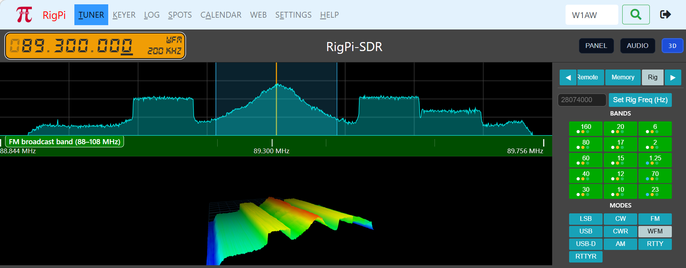

|
<< Click to Display Table of Contents >> Navigation: Views > RigPi-SDR |

RigPi-SDR is an integrated software defined radio application built directly into the RigPi station management system. It transforms your RigPi into a full-featured SDR receiver, allowing you to visualize and listen to radio signals across a wide frequency range without leaving your browser.
RigPi-SDR connects to SDR hardware attached to your RigPi and streams real-time spectrum and audio directly to your web browser. Whether you're monitoring band conditions, listening to a CW pileup, or watching FT8 activity scroll across the waterfall, RigPi-SDR gives you a live window into the radio spectrum alongside your normal RigPi station controls.
RigPi-SDR supports a growing range of SDR hardware including the AirSpy HF+ Discovery, RTL-SDR dongles, and remote SDR sources. Hardware is selected and configured by the station administrator, making it immediately available to all users without individual setup.
Spectrum Display and Waterfall The split display shows a real-time spectrum analyzer on top and a scrolling waterfall below. Signal strength is color-coded with selections for palette, giving you an instant picture of band activity. The waterfall floor and spectrum floor levels are independently adjustable to optimize the display for your noise environment.
3D Waterfall A stunning three-dimensional waterfall view is available at the touch of the 3D button. The ribbon surface scrolls away from you in real time, giving a dramatic visualization of band activity over time. You can rotate and zoom the view with your mouse or trackpad.
Integrated with RigPi RigPi-SDR embeds directly into the RigPi tuner and keyer pages. The SDR panel can be positioned at the top, middle, or bottom of the page, or disabled entirely. Each user can configure whether the SDR appears on the tuner page, the keyer page, or both.
Multi-mode Demodulation RigPi-SDR demodulates audio for USB, LSB, CW, CWR, AM, FM, PKTUSB, FT8 (with decoding), RTTY, and wideband FM. Audio is delivered through your browser via WebRTC for low-latency listening. The audio le0vel, bandwidth, and AGC are all adjustable in real time.
Memory Panel and Scanner Twenty memory slots store frequency, mode, and bandwidth settings. A built-in scanner steps through selected memories with adjustable dwell time, and automatically holds on a frequency when the squelch opens.
Per-User Settings Each RigPi user gets their own SDR settings profile — frequency, mode, bandwidth, waterfall palette, memories, and display preferences are saved individually and restored automatically at login.
Visitor Notifications The station administrator can receive an instant Pushover notification whenever a user logs into or out of RigPi, including the user's callsign, login time, and IP address.
Note: ELMER requires a supported SDR device or remote OpenWebRx/KiwiSDR connected to the Raspberry Pi 5. See the RigPi 5 hardware guide for supported devices.
ELMER opens automatically within the RigPi interface. It can also be accessed directly in a browser:
•http://rigpi5.local:8001 — for example, AirSpy HF+ (primary SDR)
•http://rigpi5.local:8002 — for example, RTL-SDR
•https://<Cloudflare URL> — Remote access via Cloudflare Tunnel
Device |
Coverage |
Port |
AirSpy HF+ |
9 kHz – 31 MHz, 60–260 MHz |
8001 |
RTL-SDR / Nooelec SMART |
HF (direct sampling), VHF/UHF |
8002 |
SDRplay RSP-ST |
1 kHz – 2 GHz |
via SDRConnect |
KiwiSDR / OpenWebRX |
Worldwide remote receivers |
Remote tab |
The large LED-style frequency display shows the current tuned frequency. The current mode (USB, CW, FT8, etc.) and bandwidth are shown alongside the digits.
•Click any digit to edit it directly from the keyboard
•Scroll wheel over the display to tune up or down
•Arrow keys fine-tune when a digit is selected
•Enter confirms the frequency; Escape cancels
The main display shows a real-time spectrum (top) and scrolling waterfall (bottom). The waterfall provides a history of signals over time.
•Click on the spectrum or waterfall to tune to that frequency
•Drag the bandwidth handles to adjust the filter width
•Scroll over the spectrum to zoom the displayed span
•MAP button overlays a world map with grayline and DX spot pins
•Side panel provides tabs for SDR settings
Band pills across the top row tune quickly to band memories. Each pill has three colored dots indicating memory slot activity:
•Blue dot — digital mode slot (FT8, PSK, RTTY)
•White dot — CW slot
•Green dot — phone slot (SSB/AM)
Click a band pill to cycle through its three memory slots. Each slot stores frequency, mode, and bandwidth.
Mode pills select the demodulation mode: USB, LSB, USB-D (digital), LSB-D, CW, CWR, AM, NFM, WFM. The active mode is highlighted.
Click Start Audio in the Audio tab to begin streaming demodulated audio to your browser via WebRTC.
Control |
Function |
Level slider |
Output volume (0–200%) |
L / C / R buttons |
Stereo pan: hard left, center, hard right |
VU meter |
Real-time audio level display with peak hold |
Scope |
Oscilloscope display of the audio waveform |
FFT |
Audio frequency spectrum display |
TX Output |
Select ALSA device for transmit audio |
Note: WebRTC audio requires a modern browser. The TX Output device selection persists across sessions.
Tab |
Function |
SDR |
Device selection, gain, AGC, bias tee, LO offset, device args, sample rate |
Display |
Waterfall palette, floor levels, smoothing, 3D waterfall |
Audio |
Start/stop audio streaming, volume, pan, VU/scope/FFT |
Remote |
Connect to worldwide KiwiSDR and OpenWebRX receivers |
Rig |
Transceiver frequency synchronization |
ELMER |
AI assistant, Workability Index, signal check |
The Device Args field passes additional parameters to the SoapySDR driver. For RTL-SDR HF reception enter direct_samp=2 (high HF) or direct_samp=1. Settings take effect on the next device connect.
When connected to the RigPi spot manager, active DX spots appear as colored tags on the spectrum display. Click any tag to tune to that frequency. The ELMER Workability Index opens automatically for the spotted station.
In MAP mode, spots appear as pins on the world map. The map includes:
•Live grayline (solar terminator) shading
•Your QTH marker
•DX spot pins with click-to-tune
•Remote SDR receiver pins (KiwiSDR / OpenWebRX)
The Workability Index assesses the probability of completing a QSO with a specific DX station on a selected band, based on multiple real-time data sources.
1.Click a DX spot on the spectrum or map — the callsign fills automatically
2.Or type any callsign in the Enter call box and press Enter
3.Select the desired band from the band selector
4.ELMER fetches data from multiple sources and displays the score
Tip: Changing the band selector automatically retunes the SDR to that band and re-runs the Workability Index.
Factor |
Weight |
Data Source |
PSKReporter activity |
20% |
PSKReporter.info — who is hearing the DX right now |
Band / MUF |
18% |
Solar flux + path distance formula |
Grayline alignment |
15% |
Calculated from UTC time and path coordinates |
Solar conditions |
15% |
NOAA SWPC — SFI and K-index |
ARRL DX Bulletin |
12% |
Weekly bulletin — confirms DXpedition active |
Antenna alignment |
10% |
Rotor azimuth vs. short/long path bearing |
Cluster activity |
10% |
Recent spot count for this entity |
Score |
Grade |
Meaning |
75–100% |
Excellent |
Strong likelihood of completing QSO |
55–74% |
Good |
Worth trying — conditions favorable |
35–54% |
Fair |
Marginal — try at suggested times |
20–34% |
Poor |
Unlikely but band changes may help |
<20% |
Unlikely |
Conditions not currently favorable |
•Score gauge — circular gauge with color coding
•Narrative — plain-English assessment with specific recommendations
•Path info — short path and long path bearings, distance in Megameters and km
•Solar conditions — SFI (Solar Flux Index) and K-index
•Contributing factors — bar chart showing each factor's score and detail
•QRZ lookup — operator name, location, photo, confirmation methods
•LoTW status — whether station is in the Logbook of the World user list (230,000+ calls)
•DXSummit activity — typical operating hours and bands based on recent spots
•Signal check — real-time SDR detection at the spot frequency
•Log history — your previous QSOs with this station and confirmation status
•Award needs — DXCC, WAC, WAZ, WAS status for this entity
•Upcoming contests — relevant contests in the next 7 days (WA7BNM calendar)
Click Copy / View to open a formatted report in a new window with Courier New monospace font. Use Select All (Cmd+A or Ctrl+A) and Copy to paste into email, log notes, or a text document.
If a rotor is connected, ELMER reads its current azimuth from RigPi and includes rotation instructions in the narrative: "Rotor is at 45° — rotate to 97° for short path to C5D."
The Remote tab connects ELMER to worldwide KiwiSDR and OpenWebRX receivers — over 1,300 receivers in the database.
1.Click Find Remote Hosts to load the receiver database
2.Enable MAP mode to see receiver pins on the world map
3.Click a map pin to connect to that receiver
4.Or type a hostname directly (e.g. sdr.k9mq.com:8073) and click Connect
When connected to a remote receiver, the local SDR pauses and the remote spectrum and waterfall are displayed.
When a transceiver is connected via RigPi, ELMER stays synchronized bidirectionally:
•Tuning on the SDR updates the transceiver frequency via CAT
•Transceiver VFO changes update the SDR display
•Mode changes are synchronized
Up to 4 users can connect to ELMER simultaneously. Each user has:
•Independent display center frequency and span (virtual slice)
•Independent mode, bandwidth, and filter settings
•Independent band memories and squelch
•Settings saved automatically per user
The envelope button ( ✉ ) in the top bar opens the messaging panel. Admin can broadcast messages to all users or a specific user. Non-admin users can send messages to admin.
•Red toast — Alert (manual dismiss)
•Cyan toast — Info (auto-dismiss 10 seconds)
•Green toast — Message (auto-dismiss 20 seconds)
•Best HF sensitivity — Use an AirSpy HF+
•RTL-SDR HF — Set Device Args to direct_samp=2 for HF frequencies
•Grayline — Enable MAP mode to see the solar terminator; paths crossing the terminator have the best propagation
•Workability timing — Check WI (Workability Index) before calling; the narrative suggests the best time window
•LoTW before working — WI shows whether the DX station uses LoTW, saving wasted QSO time
•Band memories — Each band has 3 slots (digital/CW/phone). Click the band pill to cycle through them
•Signal check — The automatic signal check tells you if there’s actually a signal at the spot frequency before you call
•Remote access — Use https://<Cloudflare URL> for full clipboard support in the Workability report
RigPi-SDR — Copyright © 2026 Howard Nurse, W6HN. Developed with AI assistance. Licensed under the MIT License.